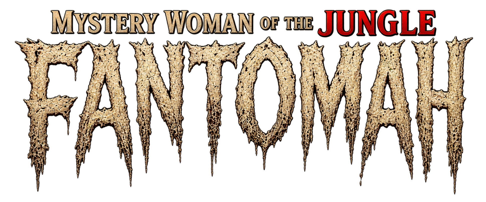
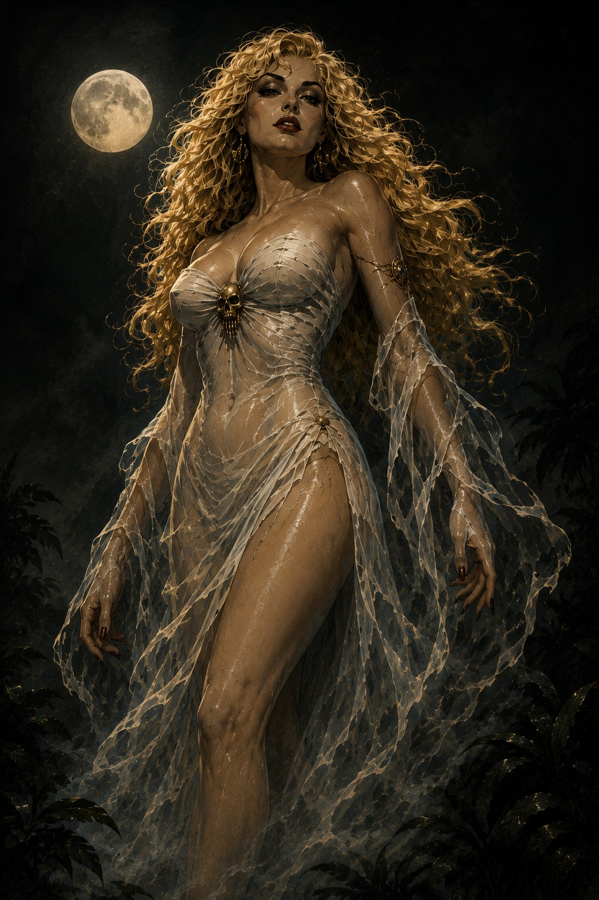
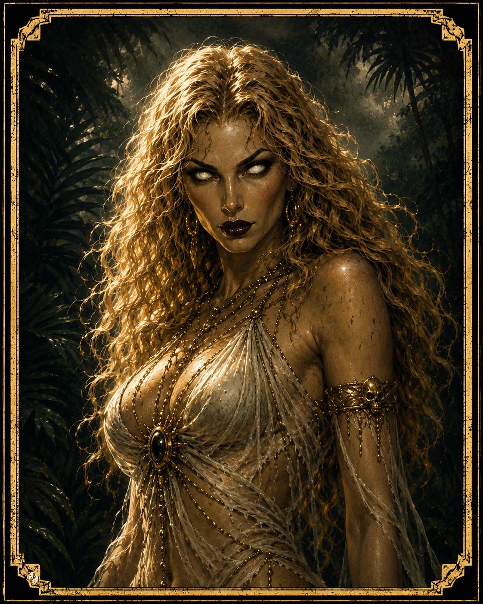
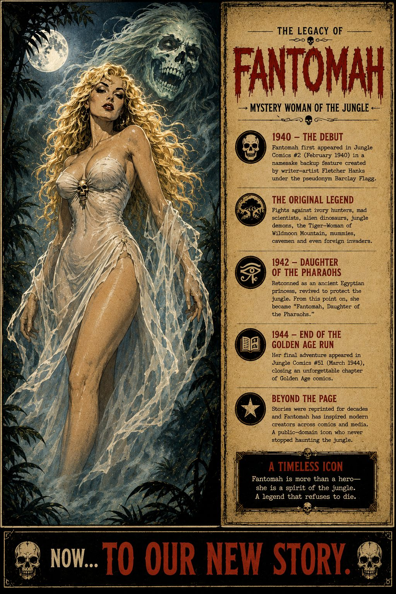
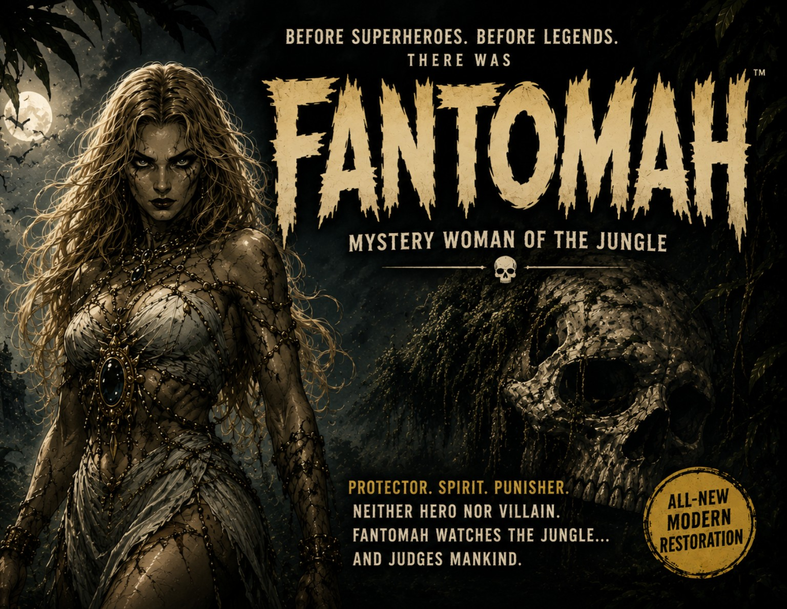
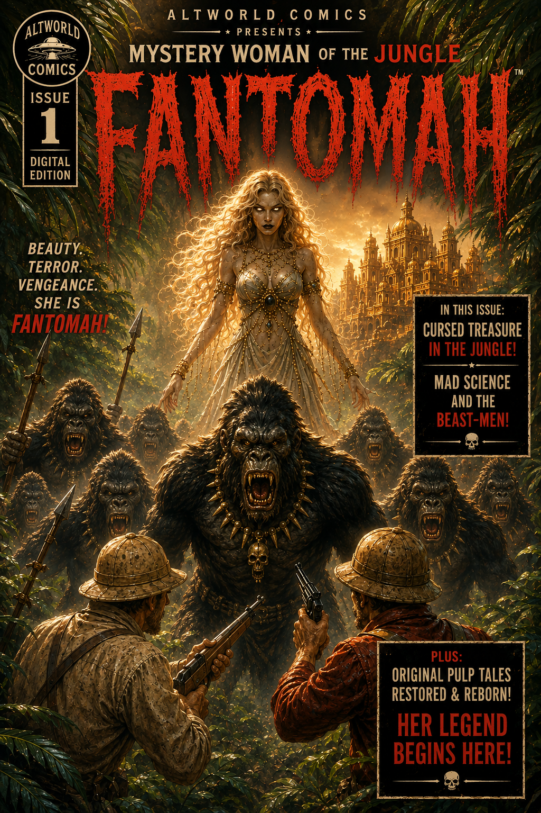

The Debut
Fantomah first appeared in Jungle Comics #2 in February 1940. Fletcher Hanks, working under the name Barclay Flagg, introduced a mysterious supernatural woman whose powers and methods could be as frightening as the villains she confronted.


Remastered Classics
Mystery Woman of the Jungle
One of the strangest heroines of the Golden Age returns. Supernatural, merciless, and almost impossible to categorize, Fantomah belongs to the wild experimental era when comic books were still inventing their own rules.
Quick Reference
| First appearance | Jungle Comics #2 — February 1940 |
|---|---|
| Original creator | Fletcher Hanks, credited as Barclay Flagg |
| Original publisher | Fiction House |
| Original run | 1940–1944 |
| Original genre | Jungle adventure, supernatural fantasy, pulp horror |
| AltWorld line | Remastered Classics |
The Character
Fantomah is a supernatural jungle heroine from the earliest years of American comic books. In her first stories she appears less like a conventional costumed hero and more like an elemental force: a mysterious guardian who protects the jungle and punishes those who threaten it.
Her adventures mix jungle pulp with fantasy, horror, grotesque transformations, impossible science, strange civilizations, and sudden supernatural judgment. The result is a character who still feels unusual more than eight decades after her debut.
That unpredictability is central to Fantomah's identity. She is protector, spirit, punisher, and pulp heroine at once — never comfortably fitting into a single genre.

From 1940 to the Golden Age
Fantomah first appeared in Jungle Comics #2 in February 1940. Fletcher Hanks, working under the name Barclay Flagg, introduced a mysterious supernatural woman whose powers and methods could be as frightening as the villains she confronted.
The earliest stories embraced the anything-can-happen energy of early comic books. Ivory hunters, mad scientists, monsters, lost civilizations, invaders, and supernatural threats could all enter Fantomah's jungle. Logic was less important than imagination and consequence.
The feature changed substantially during its run. Fantomah was reworked as an ancient Egyptian princess, and the stories moved away from the eerie supernatural avenger of the earliest Hanks material toward a more conventional jungle-adventure heroine.
Her final Golden Age adventure appeared in Jungle Comics #51. The feature ended, but later generations of readers and comic historians rediscovered Fantomah as one of the era's most unusual creations.

A Forgotten Pioneer
Fantomah appeared before many of the better-known women who would later define superhero comics. Her debut places her near the beginning of the medium's long history of super-powered heroines.
She emerged before superhero conventions were standardized. Her stories combine horror, fantasy, pulp adventure, and surreal punishment in ways later comics rarely attempted.
The earliest Fantomah stories carry the unmistakable visual and narrative intensity associated with Fletcher Hanks: direct morality, bizarre threats, and punishments that feel closer to myth than crime fighting.
Public-domain availability has allowed readers, historians, archivists, and independent publishers to keep forgotten Golden Age characters visible instead of letting them disappear completely.
AltWorld Comics
Remastered Classics is not intended to replace the original comic books. The goal is to make forgotten public-domain material easier to discover, read, and understand while keeping its historical identity visible.
AltWorld editions combine restored or re-presented historical material with new editorial pages, creator credits, background information, and a consistent visual identity. Where modern reinterpretation is used, it is presented as modern material rather than passed off as part of the original publication.
The result is designed to work as both an entry point for a new reader and a small archive for someone curious about where the character came from.
Read Fantomah

An introductory release establishing the visual and editorial direction of the AltWorld Fantomah project.
Explore Issue #0
A Remastered Classics release pairing Golden Age Fantomah material with a modern presentation and new editorial context.
Living Archive
Future Fantomah releases can be added here without turning the main Comics catalogue into an issue-by-issue list. New editions, restoration notes, selected historical art, and additional reference material can all live under the Fantomah archive.